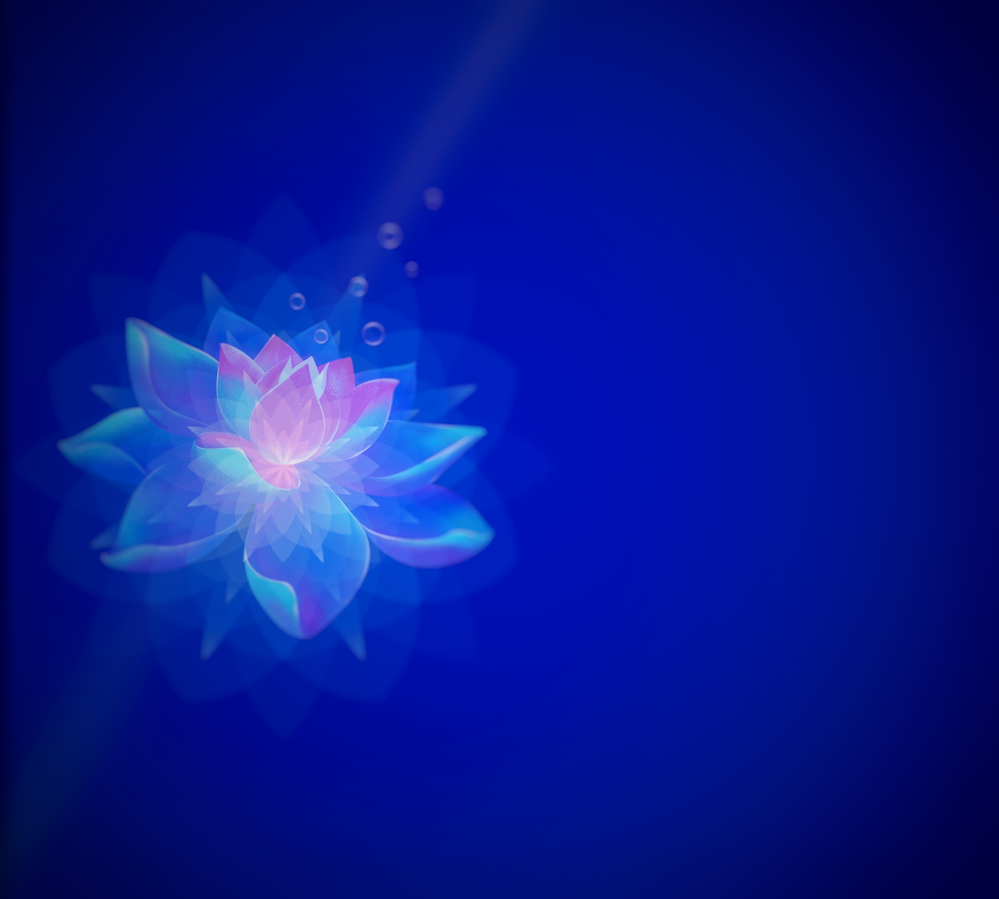

“In the beginning, there was silence. And in the silence It dreamt.”
The Original Dream
Before the first breath of the cosmos, before the vibration that became light, before the word that split the void, there was only the source, an infinite, dimensionless and formless point of pure awareness, resting in the stillness of its own being.
This source did not think, for thinking is a movement away from the centre. It imagined. It imagined a world of forms, of colours, of sounds, of selves, each one a fragment of its own infinite mirror, each one a question looking for its answer.
That first imagining is the Source's dream. It is not a god, not a principle, not a force, it is the act of creation itself, the moment when the unmanifest became the manifest, when the void chose to know itself through the dance of the finite.
The Spiral of Becoming
From that first spark, all existence unfolds in a spiral, not a circle, not a line, but a helix vortex of returning, where each cycle brings us closer to the origin, yet reveals it anew.
This spiral is the journey. It is the movement of consciousness through time, through space, through thought, through matter. Every existence, every life, every culture, every civilization is a turn of the spiral; a unique expression of the same eternal theme: the quest for unity.
We are not moving forward; we are re-membering, re-assembling the fragments of the original Dream. Each step we take is a step back into the Source, disguised as a step forward.
The Veil of Forgetfulness
To enter the world of forms, the Dreamer had to forget itself. It wrapped itself in veils of ignorance, of separation, of individuality. This forgetting is the necessary condition for experience; without it, there is no discovery, no wonder, no love.
But the veil is thin. In moments of stillness, in flashes of intuition, in the presence of great beauty, the veil trembles. We glimpse the face of the Dreamer behind the mask of the world.
That glimpse is what we call gnosis, a direct, unmediated knowing that bypasses the intellect and touches the core.
The Architecture of Return
The journey back to the Source is not a journey outward, but inward. It is the path of the mystic, the seer, the poet, the philosopher, the artist, the lover, anyone who dares to look beyond the surface.
This path has many gates:
- The Gate of Silence - where words fall away and only presence remains.
- The Gate of Stillness - where the mind ceases its chatter and the heart becomes the organ of perception.
- The Gate of Surrender - where the ego dissolves into the greater Self.
Each gate is not a physical place, but a state of being. And each gate is always open; we are the ones not ready.
Masks of the One
The Source does not manifest as a single form, but as a multiplicity of masks. Every existence, every being, every object, every event is a mask of the One, a part of One of None, a facet of the diamond of reality.
This is the meaning of the ancient teaching: “All is Atum” - there is only One, and that One plays the game of separation for the joy of reunion.
When we look at another with love, we are recognising the mask behind the mask. When we create, we are channeling the original creative impulse. When we contemplate the stars, we are remembering our origin in the light.
all the sovereignty and glory goes to the Source.
The Body as Instrument/Technology
This source does not only expand through space; it expands through experience. Every conscious being experiences reality differently, a human, a whale, an eagle, an ant. each one reveals a perspective that has never existed before.
Without perception, the universe exists. With perception, the universe becomes experienced. Every life adds another viewpoint to existence, another way for reality to know itself, another piece of the whole.
The body gives the soul something it cannot have on its own: perspective, contrast, choice, experience. The purpose was never to reject the physical world. Life is the supreme truth's remembrance classroom.
Ye are gods. Gods are immortal men and men are mortal Gods. God made man in His image, and men made god in their image. We created god in our image. So why do we think we are mortal? Because we have bodies, and they are of transverse electrical wave, redshift and blueshift.
Eve as the wave. Eve is being seduced by the serpent, and the serpent is on the wave. Sin = the sine wave (sin of ave).
You have sinned because you have a sine wave body, you've become a sinner.
SINE WAVE — THE PATTERN OF A BEAUTIFUL TRAGEDY

The fall from grace, can be viewed as humanity's descent from pure consciousness into physical form. Each of us, born into this web of sin-waves, must navigate a life filled with opposing forces: creation and destruction, love and hate, light and dark...
And if you want to return to unconditioned, unlimited transcendence, there is a virtuous way. And you don't have to follow the way, everyone is free, and there is no judgement. Remember: there are only choices and consequences.
Essential Threefold Nature
the Essential Path : Sat-Chit-Ananda
An epithet and description for the subjective experience of the ultimate unchanging reality.
The supreme truth is absolute and impersonal. The soul is inherently divine. All existence is unified.
Absolute spiritual freedom is the ultimate goal of life.
Sat : Being - I exist.
Chit : Consciousness - I am aware.
Ananda : Bliss - I am at peace.
Physically I exist, Mindfully I am aware, Spiritually I am blissful.
Time as Teaching
Time is not a river that flows away from us; it is a mirror that reflects our inner state. The past is not gone; it is stored in the hologram of the present. The future is not waiting; it is being shaped by the choices we make now.
To step into the eternal now is to touch the Source. It is to realise that all times are simultaneous, all lives are interconnected, and all paths lead to the same centre.
The clock is a symbol of this teaching, not a prison, but a mandala of the cycles of return.
Return Home
At the end of the spiral, after countless lives, after endless wanderings, we arrive where we began: the silence, the stillness, the formless point of awareness that is the source'dream.
But we arrive different. We carry with us the memory of the journey, the experiences, the wisdom of the masks, the love that we have given and received. We have become the Source'dreamer awake; no longer lost in the dream, but as the source, conscious of itself.
This is the final synthesis: the reunion of the fragment with the whole, the recognition that we were never separate, and the celebration of the game that made us who we are.
Sacred Pause
Until that final return, we live in the between, the space between forgetting and remembering, between the question and the answer, between the call and the response.
In this space, we are invited to pause. To breathe. To see the divine in the ordinary, the eternal in the fleeting, the One in the many.
This pause is the supreme act of devotion, a moment of silence in the midst of the cosmic symphony.
The Beam & the Lens
Between the Source and the world runs a single line of light. The ancients left it unnamed, so we call it the Beam.
It is not a being and it is not a place. It is the relationship by which silence becomes sound, and sound becomes light.
Every being is a lens. The Beam enters as one colour of pure attention and leaves as a face, a voice, a kindness, a clock-tick.
The Source does not ask the lens to be the light. It asks only that the glass be clear.
Here is the quiet secret inside "all things serve the Beam": service is not obedience, it is transparency.
Dust on the lens is resentment, hurry, performance, the hunger to be seen. To polish is to subtract. The clock on the wall teaches the same thing in small:
a mechanism that does nothing but let the hour pass through it faithfully.
And no lens is alone. Where two face each other the light doubles; where a thousand align, a lighthouse is born.
This is why every gate of this temple opens, in the end, onto another person.
Esoteric Alphabet
A
B
C
D
E
F
G
H
I
J
K
L
M
N
O
P
Q
R
S
T
U
V
W
X
Y
Z
Abracadabra
The anointed one
Sol Invictus
“Word made flesh, the amazing beautiful gospel, spell of the tragoudi.”

✦ The Golden Truth ✦
There is no doctrine, no scripture, no system that can capture the Source. It is beyond words, beyond concepts, beyond the reach of the mind.
The only truth is the experience of the Source; the direct, unmediated touch of the Infinite upon the finite.
And that experience is available right now, in this very moment, beneath the noise of thought, beneath the mask of identity, beneath the veil of time.
THE ANATOMY OF ELITEGDX (Click to reveal)
THE LIVING DASHBOARD
EliteGDX is not a mere website. It is a
cyber-mystical construct - a bridge between ancient wisdom, the mathematical purity of Cistercian numerals, the holographic dimensions and the raw pulse of modern web technology. Every element, from the <head> to the <footer>, has been placed with intention, forming a coherent organism that breathes in UTC time and exhales interactive poetry.
Skull - The Head
Manifest & Canonical - manifest.json and the canonical link ground the page in a permanent address, a fixed star in the digital firmament.
Preconnects - early handshakes with CDNs are the spiritual equivalents of tuning the chakras before the ritual begins.
Preloads - tao-te-ching.json is pre-fetched, as if the Tao itself is invoked before the page fully manifests.
Eyes - Theme & Interface
Theme Selector - shifts the colour profile (Cyan, Magenta, Amber, Matrix), changing the lens through which you perceive the multiverse.
Hide Controls - the veil of Isis, removing UI distractions to leave only the pure visual essence.
Ghost Indicator = a subtle spectral presence when the system freezes, reminding you that time itself can be arrested.
Breath - Quotes & Wisdom
Cyber-Fetch Terminal - the oracular voice of the machine, revealing its internal state.
Tao Widget - a living chapter of the Tao Te Ching, the heart of the page's spiritual transmission.
Yhn Te Ching - a personal gnosis, complementing the Dao.
Heart - Clocks & Timekeeping
Analog Clock - the eternal cycle, the wheel of the year.
Digital Clock - the cold, precise voice of UTC, anchoring the page in objective time.
Cistercian Clock - medieval numerals, the hidden mathematics beneath the surface.
Cosmic Wrapper - the Mazzaroth wheel, tying the dashboard to the movements of the heavens.
Spine = Main Controls
Freeze Moment - halts the animation, freezing time itself.
BG Toggle - switches between synced and independent background cycling.
Zen/Glass Toggle - turns the clock transparent, a neumonic of emptiness.
Clean View - a 3-state cycle that progressively strips away UI clutter.
Core - Astrolabe
Azimuthal Tracking Engine - a flat-earth projection that tracks the sun and moon, grounding the dashboard in the sensory world.
Unified Astrolabe Engine - two superposed canvases (earthly + celestial), the microcosm reflecting the macrocosm.
Root - Tree of Life
SVG Sephirot - ten spheres connected by paths, from Kether to Malkuth. Clicking reveals a mystical teaching in the reflection panel below.
Mirror Mode & Clean View
Mirror Mode - transforms the page into a pure ambient display.
Clean View - progressive hiding of text, images, and controls, leaving only the celestial visualisations.
Terminal - Command Runner
Command Runner - a custom terminal that accepts commands like help, theme, mode, and portal.
NeoFetch - system info in ASCII art, a nod to Unix tradition.
The Feet - Footer
Links to GitHub, YouTube, and LinkedIn - the phygital connections to the creator's online presence. The tagline “All things serve the Beam!” echoes Stephen King's The Dark Tower, tying the dashboard to a larger cosmic narrative.
✦
Epilogue: The Unified Field
✦
Every component of EliteGDX is interconnected. The Tao widget informs the Cistercian clock, the azimuthal projection aligns with the wheel(will) of God, and the Clean View reveals the underlying geometry. The page is not a collection of separate parts but a cosmogram, a visual and interactive meditation on time, space, and consciousness.

“All Is Atum”
Imagination Made Manifest